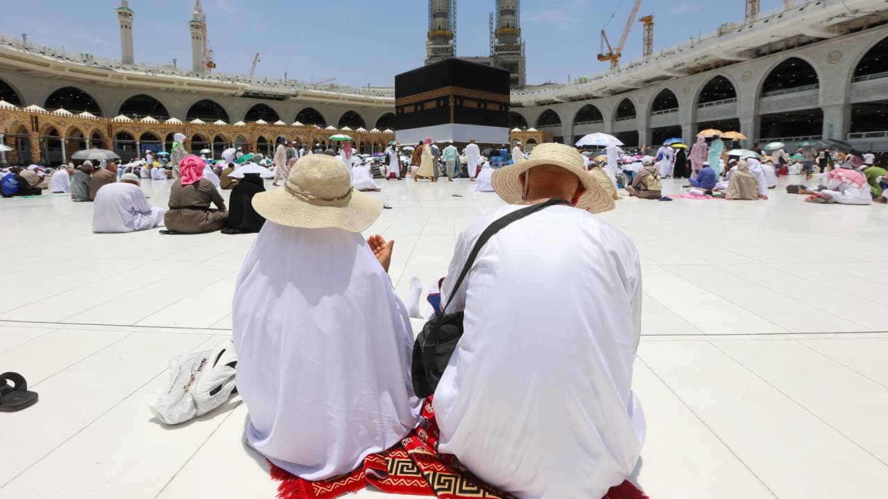

الاسم: قمر ايمن محاميد
المدرسه: عمر بن الخطاب
رقم الهوية: 338569759
الصف: الخامس (ج)
المهمة: (الحج)
السنة: 2024.
:ما هو الحج لغه واصطلاحأ؟
- الحج في اللغة يعني الزيارة أو السير، وفي الاصطلاح الديني يشير إلى الزيارة المقدسة إلى مكة المكرمة،
وهو أحد أركان الإسلام
الخمسة. يقوم المسلمون بأداء الحج مرة واحدة في العمر إذا تيسرت لهم الإمكانيات المالية والصحية، ويأتي
الحج بأهمية كبيرة في
تعزيز الوحدة والتضامن بين المسلمين من جميع أنحاء العالم
ما هو حكم الحج ؟ (مع ذكر الدليل):
- حكم الحج في الإسلام يعتبر واجباً على كل مسلم بالغ، ما لم يكن عليه مانع شرعي، مثل عدم توفر القدرة
المالية أو الصحية، أو
وجود عوائق أخرى تمنع الشخص من أداء الحج. للمسلم القادر المتمكن من الأمور المالية والصحية، فإن الحج
يصبح فريضة عليه
اذكر بعضا من حكم الحج:
- الإحرام: يجب على الحاج الدخول في حالة الإحرام قبل دخول مكة المكرمة، وهو حالة محددة تتضمن العديد من
التحريمات والتقييدات.
الطواف: أداء الطواف حول الكعبة المشرفة، وهو من أهم الأعمال في الحج، ويتم في البداية وفي الختام.
السعي بين الصفا والمروة: يتم السعي بين الصفا والمروة سبع مرات، اتباعًا لسنة النبي إبراهيم وابنه
إسماعيل، وهو جزء من
مناسك الحج.
وقوف عرفة: يجب على الحاج الوقوف في عرفات يوم عرفة، وهو يوم من أهم أيام الحج.
على من يجب الحج؟:
- يجب الحج على كل مسلم بالغ، قادر ماليًا وصحيًا، مرة واحدة في العمر، إذا توفرت لديه القدرة والوسائل
للقيام به.
ما هو الاحرام؟:
- الإحرام هو الحالة التي يدخل فيها الحاج أو المعتمر في حجره أو عمرته، ويبدأ في أداء مناسك الحج أو
العمرة. يتضمن الإحرام
ارتداء الثياب الإحرامية المحددة، وهي عادةً إزار ورداء بيضاء، والتي ترمز إلى التواضع والتجرد من
الدنيا. يتم التحلل من
حالة الإحرام بعد أداء مناسك الحج أو العمرة الرئيسية.
ما هو الميقات؟ وما هي اقسامه؟:
- الميقات هو المكان الذي يحدد فيه الحاج أو المعتمر حدود دخول حالة الإحرام قبل دخول الحرم المكي. وهناك
خمسة مواقع رئيسية
للميقات، وهي:
الدُّلْه: وهي الميقات لأهل مكة ومن أتى عليها من شمال المدينة.
الجُحْفَة: وهي الميقات لأهل الشام والقادمين من تلك الجهة.
القَرَن الْمَنَازِل: وهي الميقات لأهل اليمن والحضرم وكل مَن أتى عليها من تلك الجهة.
الجُنُوبِيَّة: وهي الميقات لأهل النجد والحجاز الجنوبي.
ذُو الْحُلَيْفَة: وهي الميقات لأهل النجد وأهل المدينة والشام من جهة الطائف.
في حال كان الحاج أو المعتمر مقيمًا في مكة المكرمة، يكون الميقات له هو مكان إحرامه بعد الخروج من
الحرم.
ما هي محرمات الاحرام؟:
-
قتل الحيوانات البرية:
الحاج محظور عليه صيد الحيوانات البرية أو قتلها أثناء فترة الإحرام.
استعمال الطيب والعطور: يجب على الحاج الامتناع عن استخدام الطيب والعطور أثناء فترة الإحرام

ما هي اماكن اللميقات؟:
-
ذو الحليفه
الجحفة
قرن المنازل
وادي محرم
يلملم
مكة
ذات عرق
ما هي اعمال الحج؟:
- الإحرام.
الطواف بالكعبة المشرفة.
السعي بين الصفا والمروة.
وقوف عرفة.
رمي الجمرات.
حلق أو قص الشعر.
الطواف بالإفاضة (إذا كان الحاج قد أدى العمرة).
الطواف بالوداع.
ما هي اعمال العمرة؟:
- تبدأ مناسك العمرة بأن يقوم المعتمر بالإحرام من المواقيت المحددة، ثم التوجه إلى مكة ودخول المسجد
الحرام، يقوم المعتمر بعد
ذلك بأداء الطواف ثم السعي بين الصفا والمروة، وتنتهي المناسك بالحلق أوالتقصير